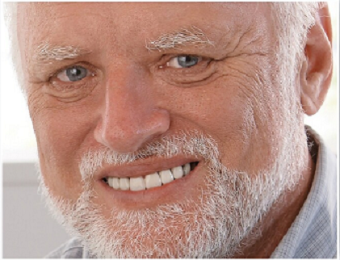

COVID-19
We are happy to announce that our office is now open!
All patients will be required to bring a mask.
Each patient will be screened before entering.
WE REQUIRE THAT PATIENTS CALL 843-662-2543
IN ADVANCE AND MAKE A RESERVATION FOR THE DAY THEY WISH TO BE SEEN.
WALK-IN PATIENTS WILL BE SEEN ON A SPACE AVAILABLE BASIS.
Due to social distancing, our office will be limited in the number of people
allowed in at one time. Because of this,
only the patient will be allowed to enter the building.
All others will need to wait in their vehicle or make a return visit
to pick up the patient. Absolutely no children allowed. Please print and
bring the following form with you: Patient Appointment Checklist.
Additionally, please note that we may have to limit the number of
patients per day based on social distancing guidelines, so If there
is a particular day you would like to come in, please call 843-662-2543
and put your name on a reservation list for that day or send us an email here.
lease include a phone number where you can be reached. For information on the
Myrtle Beach office, please call 843-449-0431.
Affordable Dentures
People have been coming to Sexton Dental Clinic
for beautiful smiles since 1923. We make your dentures
in our onsite laboratory while you wait, so you can
leave with your new smile the same day!
Cosmetic & Restorative Dentistry
Take your smile to the next level. Our full service
Cosmetic & Restorative department offers everything
from whitening to implants to our famous “Complete Smile
Makeover.” Contact us to schedule a consultation.
Relax with IV Sedation
IV sedation is an ideal option for patients
who are scared of dental work or who have a low
tolerance for pain. Anesthesia specialists control
the patient’s level of sedation by administering
medication intravenously.
